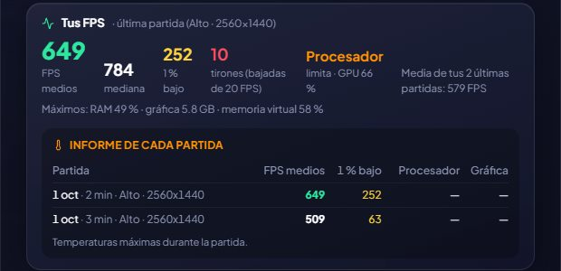

Tes vrais FPS
Mesure les FPS pendant que tu joues, sans toucher au jeu, et te dit ce qui te limite.
Avec PresentMon, un outil gratuit et open source d’Intel, GameHub observe de l’extérieur quand le jeu dessine chaque image : il n’injecte rien, donc il ne gêne pas les anti-triche. Quand tu fermes le jeu, il garde un résumé : FPS moyens, médiane, 1 % low (la fluidité) et saccades.
Il note tes réglages graphiques de cette session (qualité, résolution, DLSS/FSR, génération d’images, ray tracing, VSync, limite de FPS) et te dit ce qui limite tes performances : le GPU, le CPU ou un plafond de FPS (si tu étais bridé par la VSync ou une limite du jeu ou du pilote, tu verras « Limité » au lieu d’accuser le CPU). Plus la RAM, la mémoire vidéo et la mémoire virtuelle utilisées par le jeu, au cas où tu en manquerais.
On a vérifié qu’il mesure correctement : avec une animation à exactement 360 FPS, GameHub a lu 358,8. Et si tu veux les voir pendant que tu joues, mets-les dans le HUD.
Comment l’utiliser
- Active-le dans l’écran d’accueil ou dans Options → Ton PC (c’est facultatif). Windows demande l’autorisation une fois et la mesure commence après une déconnexion ou un redémarrage.
- Joue un moment et ferme le jeu : tu le verras sur sa fiche, dans « Tes FPS ».

Tu l’essaies ?
⬇ Téléchargement direct 🛍️ Télécharger sur le Microsoft StoreWindows 10 et 11 (64 bits) · Gratuit · Se met à jour tout seul